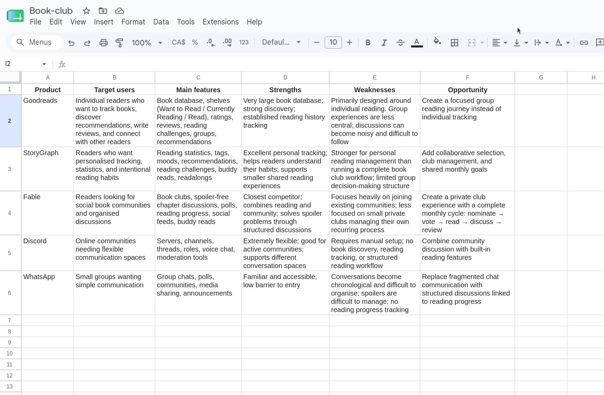
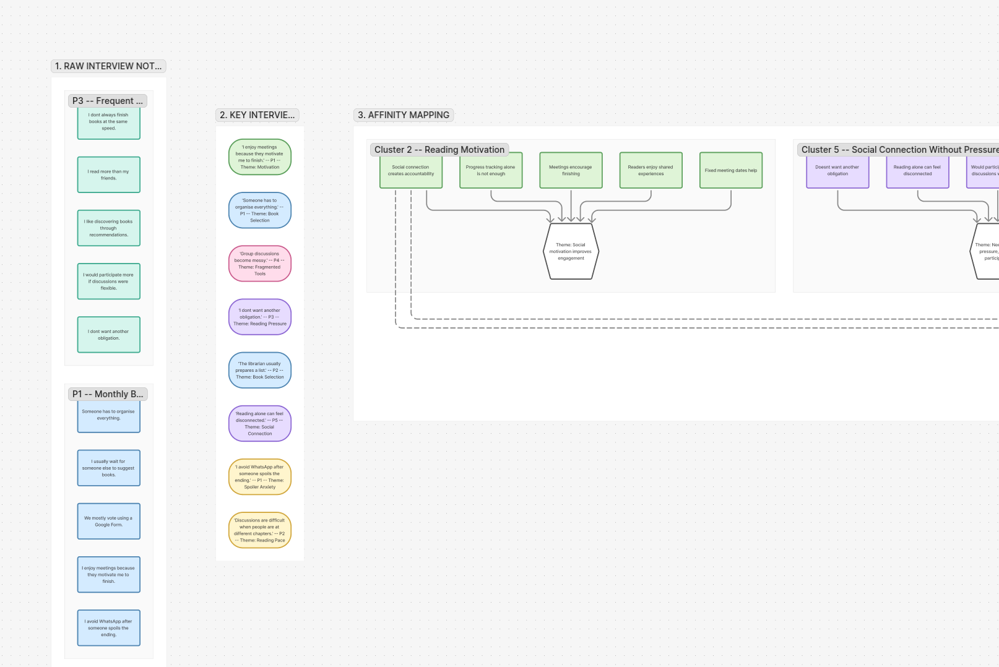
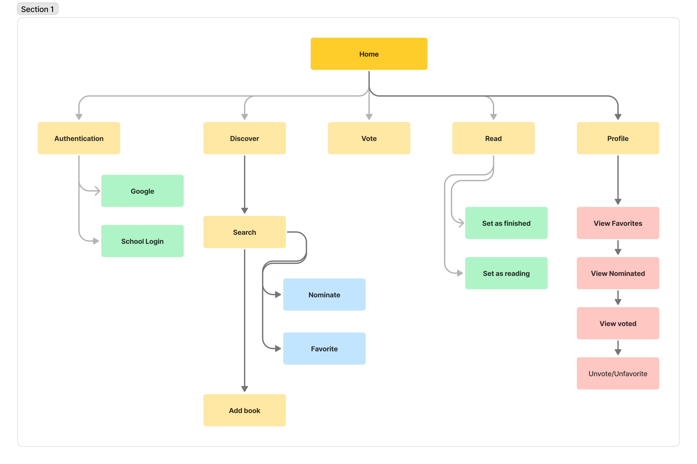
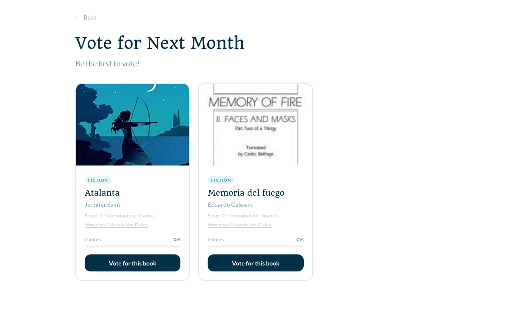
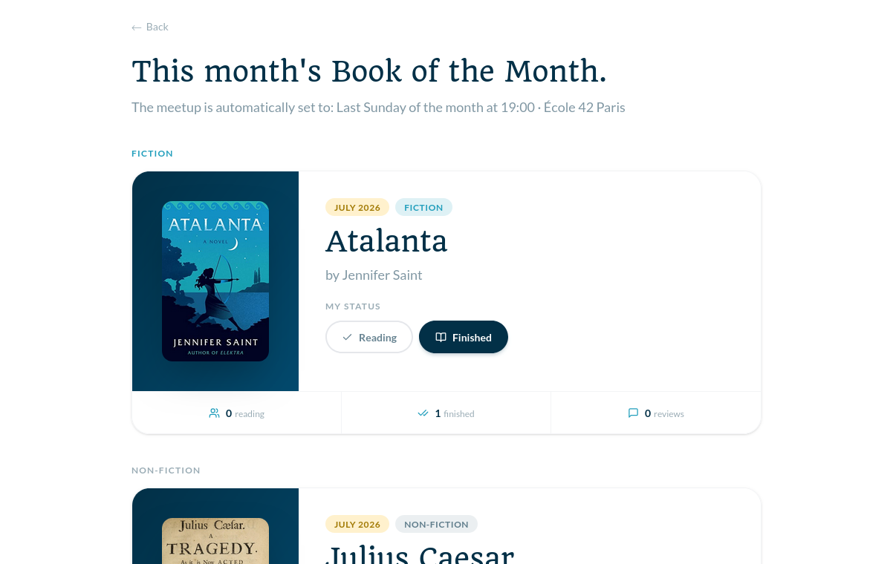

README Club
Designing a collaborative reading experience that helps book clubs discover, decide, read, and discuss together.
Project Overview
The Challenge
Book clubs create meaningful social connections, but many groups still rely on disconnected tools:
- Discord for discussions
- Google Forms for voting
- Spreadsheets for tracking
- Goodreads for discovery
While these tools solve individual problems, they do not support the complete book club journey. Members often have to manually recreate an experience that should feel connected:
How might I create one platform that helps readers participate in a book club while respecting different reading habits and schedules?
The Solution
README Club is a community reading platform designed to centralise the complete book club experience. The platform allows members to discover and suggest books, vote collaboratively, track reading progress, participate in spoiler-safe discussions, and share reviews and reflections.
The goal was not to replace individual reading platforms, but to create the missing collaborative layer between them.
Design Process
The project followed a user-centred design approach:
Understanding the Problem
Before conducting research, I identified assumptions that needed validation.
Book selection is often controlled by a small number of members.
Potential impact: Some members may feel disconnected from group decisions.
Social accountability can influence reading motivation.
Potential impact: Readers may be more likely to complete books when they share the experience with others.
Existing discussion tools do not support different reading speeds.
Potential impact: Readers may avoid conversations because of spoilers or because they feel behind.
Competitive Analysis
The goal was to understand how existing products support book discovery, reading tracking, community interaction, discussions, and group organisation.

Comparing five platforms across five dimensions
Finding 1 — Existing platforms solve individual problems
Goodreads and StoryGraph are effective for discovering and tracking books. However, collaborative activities such as choosing books, tracking group progress, and organising discussions usually happen elsewhere.
Finding 2 — Book clubs depend heavily on manual organisation
Members combine multiple tools to recreate one experience.
Opportunity: Create a dedicated workflow where the entire book club journey exists in one place.
User Research
5 semi-structured interviews were conducted remotely, 20 minutes each. Participants were encouraged to describe real experiences rather than hypothetical opinions.
Recruitment criteria
- Read at least 5 books per year
- Participated in a book club or reading community
- Used at least one reading-related platform
| ID | Profile | Behaviour |
|---|---|---|
| P1 | Monthly book club member | Reads 15 books/year |
| P2 | Library book club member | Reads 20 books/year |
| P3 | Frequent solo reader | Reads 30 books/year |
| P4 | Goodreads user | Reads 15 books/year |
| P5 | Casual reader | Reads 5 books/year |

Four major themes emerged from the analysis: book selection, reading motivation, spoiler anxiety, and fragmented tools.
Research Insights
Readers want influence without extra responsibility
3/5 participants described book selection as controlled by organisers.
"Usually one person suggests the books because someone has to organise everything."
"I rarely influence what the group reads."
Design opportunity: Create lightweight participation through nominations and voting.
Motivation comes from social connection
3/5 participants mentioned meetings or discussions helped them complete books.
"Knowing we have a meeting coming up helps me finish."
Design opportunity: Create progress visibility without pressure.
Readers need spoiler-safe discussions
4/5 participants mentioned avoiding discussions when behind.
"Someone mentioned the ending without realising I was behind."
Design opportunity: Adapt discussions based on reading progress.
The experience is fragmented
5/5 participants used multiple platforms.
"Discord works, but conversations become messy."
Design opportunity: Create one connected reading environment.
Research-Based Personas
Personas were created by combining patterns observed during interviews rather than representing individual participants.
"Someone has to organise everything."
Goals
- Keep the club active
- Reduce admin effort
Pain points
- Organising everything alone
- Low participation
Needs
- Structure
- Automation
- Shared responsibility
"I don't want another obligation."
Goals
- Participate without pressure
Pain points
- Feeling excluded
- Difficulty keeping pace
Needs
- Flexibility
- Simple progress tracking
"I want my recommendations to count."
Goals
- Influence group choices
Pain points
- Limited contribution to decisions
Needs
- Discovery
- Recognition
- Contribution
Ideation & Design Exploration
Challenge 1 — How can members contribute without increasing organisation?
Admin-only selection
Rejected
Creates a passive audience.
Random book selection
Rejected
Removes community ownership.
Collaborative nomination
Selected
Allows participation while keeping organisation simple.
Challenge 2 — How can discussions remain inclusive?
Single group chat
Rejected
Creates spoiler risks.
Separate channels
Rejected
Creates unnecessary complexity.
Progress-based discussions
Selected
Balances safety and participation.
Information Architecture
Before designing individual screens, I mapped the product structure to ensure the experience followed a clear reading journey.

Key Design Decisions
Collaborative Voting
Problem: Members felt disconnected from book selection.
Solution: Members nominate books and vote together.
Impact: Creates shared ownership of the selection process.

Reading Progress
Problem: Readers progress differently.
Solution: Simple statuses — Want to Read · Reading · Finished.
Impact: Creates visibility without pressure.

Spoiler Protection
Problem: Readers avoid discussions when behind.
Solution: Discussion access adapts to reading progress.
Trade-off: Less immediate conversation, but a safer experience.
Usability Testing
5 new participants (different from the research phase) were asked to complete three core tasks to validate workflow understanding, action clarity, and feature usefulness.
| Task | Success rate |
|---|---|
| Nominate a book | 4 / 5 |
| Vote for a book | 3 / 5 |
| Join discussion | 3 / 5 |
Task 1 — Nominate a Book
Problem: Users confused “Save” with “Nominate”.
Iteration: Changed CTA label from Save to Nominate for Club and added confirmation feedback.
Task 2 — Vote for a Book
Problem: Voting rules were unclear.
Iteration: Added remaining vote count, deadline information, and inline instructions.
Task 3 — Join Discussion
Problem: Users understood restrictions but wanted more explanation.
Iteration: Added contextual message: “Finish the book to join the conversation and avoid spoilers.”
Impact of Iterations
After iterations, users understood the purpose of each workflow more quickly, voting rules became clearer, and spoiler protection required less explanation.
Small changes in wording and visibility significantly improved usability. The final prototype better supported the original goal: creating a collaborative reading experience without adding organisational complexity.
Accessibility Considerations
Colour
Checked contrast ratios. Avoided colour-only communication.
Typography
Clear hierarchy and readable text sizes throughout.
Interaction
Clear states for selections, progress, locked discussions, and voting.
Responsive
Layouts adapted for desktop and mobile screens.
Technical Considerations
Because this project was developed as a functional prototype, technical constraints influenced design decisions. The goal was not only to design an ideal experience, but also to validate whether the experience could realistically be implemented.
Real-Time Collaboration
Firebase supported authentication, user data, and real-time updates — allowing collaborative features to behave closer to a real product experience.
Book Data
Book APIs introduced challenges around metadata availability, category inconsistencies, and different data formats. These limitations influenced how book information was displayed and filtered.
Frontend Architecture
Implemented with React, TypeScript, and Tailwind CSS. A component-based approach allowed faster iteration between design and implementation, supporting UX validation without becoming the focus of the product experience.
Reflection
README Club taught me that designing community products is not simply about adding social features. The challenge was balancing autonomy vs responsibility, motivation vs pressure, and openness vs spoiler protection.
The project strengthened my ability to transform research into insights, insights into design decisions, and design decisions into a validated product experience.